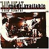
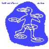
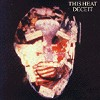

strange music page
overseas * * * this heat
強靭とか強固とかそーいう、言葉の似合いそうなバンド。
初めて聴いた時の感覚は、普通に道を歩いてたら突然外人に鈍器で殴られたよーな感じ。
他の何にも似てない音楽ですけど、物凄く格好良いです。
あ、来日見に行きました。
強靭としか言いようの無いドラムが印象に残ってます。 |
|
#1979に出たthis heatの1枚目のアルバム。Quiet Sunを辞めたCharles Haywardが兄のCharles Bullenとはじめた即興演奏のユニットが母体となってるみたいです。
ロックとかブルースとか普通何か既存のものを踏み台にして音楽を作ることを拒否してるように思えます。ほんとにそんなよーな気がするくらい何か他のものとは
違った音です。
すごいなと思うのは、更にその上で物凄く格好イイということかな。まぁ聴いてみましょう。

- test card
- horizontal hold
- not waving
- water
- twilight furniture
- 24 track loop
- diet of worms
- music like escaping gas
- rain forest
- the fall of saigon
- test card
- Charles Bullen (guitars,clarinet,viola,voice,tapes)
- Charles Hayward (percussions,keyboards,voice,tapes)
- Gareth Williams (keyboards,guitars,bass,voice,tapes)
These Records: heat-1-cd (original release 1979)
#This HeatのBBCライヴ、堀越の家にCDを回収に行ったついでにいらないCDを売ってもらう。すげー良いです、こんなの売っちゃって良かったのかな？こーゆー緊張感のある音楽はたまんないです、スタジオ盤より良いかも。録音はすべて1977のもの。
でもBBCって凄いですね、国営の放送局なのにこんなアヴァンギャルドな音楽を流してしまうなんて、日本じゃ考えられないです。NHKでボアダムズのライヴを放送するようなものかも。(1999.3.22)

- Horizontal Hold
- Not Waving
- The Fall of Saigon
- Rimp Romp Ramp
- Makeshift
- Sitting
- Basement Boy
- Slither
- Charles Hayward
- Charles Bullen
- Gareth Williams
these records: these-10 (1996)
#ROUGH TRADEから出てたthis heatの7"のCD再発(8cmシングル!)です。C.Haywardのドラムスが炸裂する8分と少しです、ただただかっこいい。
ジャケも可愛いですし、もしもthis heat未聴の方いらっしゃいましたら騙されて買ってみても良いのでは無いかと。渋谷タワレコ6F現代音楽コーナーで\1080。(2001.3.23)

- health and efficiency
- Charles Hayward
- Charles Bullen
- Gareth Williams
these records: these-12 (1998/original release 1980 - rough trade)
#this heat2枚目。前作よりも更に緻密になったよーな感じ、少しメロディーの割合が増えてきたというか
うたっぽくなってきたような気がします。
即興を編集、更に即興を重ねて更に編集って手法。こんなに緊張感の高い音楽も無いもんだ。フリージャズじゃないしプログレじゃないし（プログレに分類されるけど）、他の人達とは視点の違う音楽でしょう。唯一無二っちゅーの？
それにしてもこの諦念みたいな雰囲気はなんだろー？一瞬
アモンデュールが頭をよぎりました。どっちもマニアックだから分かりにくいですね、スイマセン。
パンクがどーとか、ロックがどーとか、ノイズがどーとか言う前に聴いて欲しいよーな一枚。(2002.2.3)

- Sleep
- Paper Hats
- Triumph
- S.P.Q.R.
- Cenotaph
- Shrink Wrap
- Radio Prague
- Makeshift Swahili
- Independence
- A New Kind of Water
- 被爆症 (Suffer Bomb Disease)
- Charles Hayward (voice,drums,keyboards,guitars,bass,tapes)
- Charles Bullen (voice,guitars,clarinet,drums,tapes)
- Gareth Williams (voice,bass,keyboards,tapes,mask)
these records: these-2 (original release 1981 - rough trade)
#向ヶ丘のフツーの中古CD屋さんで、\880でした。ちなみに"this heat/this heat"と"Camberwell Now/All's Well"も同じような値段で売ってました。よく知らないんですけど、たぶんブートだと思います。12"のHealth and Efficiencyが入ってるみたいですけど、元知らないからわからないです。これをアバンギャルドって呼んで良いのかわからないですが、他に似ている音楽がないので比較しようがないです。(1999.2.1)
- Charles Bullen (gutiars,clarinet,viola,flute)
- Charles Hayward (percussions,harmonica,meastrovox,keyboards)
- Gareth Williams (bass,keyboards,tapes)
- Mario Boyer Diekuuroh (gylli,flute,percussions,voice)
Canterbury Dream: CTD-028
#えーとthis heat後のC.Haywardのバンド。this heatよりも構築されたよーな感じの音です。
Henry Cowを思わせるような局面もあったりして。
1982年のMERIDIAN(1-4.) 1985年の"The Ghost Trade"(6-11.) 1986年の"Greenfingers"(12-15.)をまとめたCDみたいです。
- Cutty Sark
- Pearl Divers
- Sprit of Dunkirk
- Resplash
- Daddy Needs a Throne
- Working Nihgts
- Sitcom
- Wheat Futures
- Speculative Fiction
- Green Lantern
- The Ghost Trade
- Greenfingers
- Mystery of the Fence
- Know How
- Element Unknown
- Trefor Goronwy (voice,bass,guitar,keyboards,jews harp,etc.)
- Charles Hayward (voice,drums,keyboards,etc.)
- Maria Lamburn (soprano sax,tenor sax,piccolo,viola,etc.)
- Stephen Rickard (tape switchboard,etc.)
RECREC MUSIC: ReCDec-1015 (oroginal release 1982-1986)